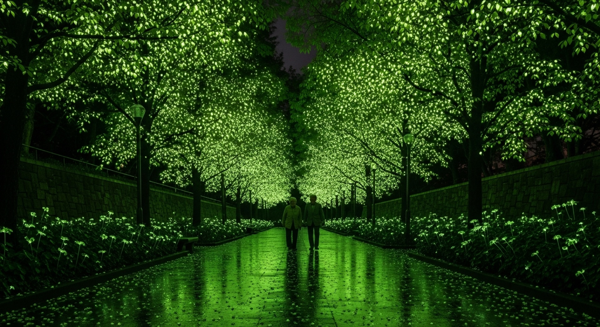
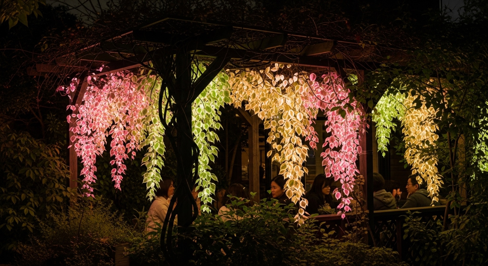
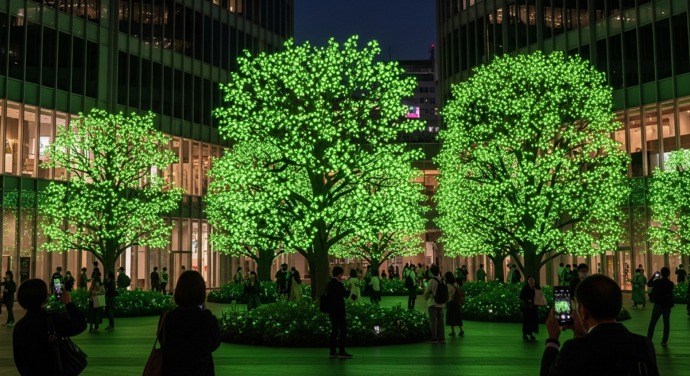

Technology
蛍光・化学発光タンパク質を基盤とした発光遺伝子技術
LEPの基盤技術は、蛍光タンパク質および化学発光タンパク質を利用した発光遺伝子技術（bioluminescent genetic system）です。この技術は、生体内の分子や細胞の活動を可視化するバイオイメージング技術として発展してきたものであり、生命科学研究、医学研究、創薬研究において広く利用されています。
LEPでは、この技術を基盤として発光遺伝子を植物に導入することで自発光植物を実現する技術開発を行っています。

Technology
LEPの基盤技術は、蛍光タンパク質および化学発光タンパク質を利用した発光遺伝子技術（bioluminescent genetic system）です。この技術は、生体内の分子や細胞の活動を可視化するバイオイメージング技術として発展してきたものであり、生命科学研究、医学研究、創薬研究において広く利用されています。
LEPでは、この技術を基盤として発光遺伝子を植物に導入することで自発光植物を実現する技術開発を行っています。

Feature
蛍光タンパク質および化学発光タンパク質は、生体内の分子や細胞活動を可視化するバイオイメージング技術として広く利用されています。しかし従来技術には以下の課題がありました。
01
・観察には強い励起光が必要
・光照射による細胞損傷（phototoxicity）が発生
・長時間観察が困難
02
・発光シグナルが弱い
・リアルタイム観察が困難
このため「光照射を必要とせず、高輝度で観察可能な発光システム」の開発が求められていました。
類例のない独自の発光タンパク質技術
永井健治教授の研究グループは、化学発光タンパク質 × 蛍光タンパク質を融合させた高光度発光タンパク質 Nano-lantern（ナノランタン）を開発しました。
発光キノコの生物発光システムを植物内で再設計。外部からの基質添加なしで、持続的に光る自律的な回路を構築しています。
発光酵素と蛍光タンパク質を融合させた独自技術「ナノランタン」により、エネルギー移動を最適化し、従来比20倍の明るさを実現。

光の波長を高度に制御することで、発光タンパク質において約20色のバリエーションを実現。将来的にはイルミネーションや景観演出に無限の可能性をもたらします。
ナノランタン技術は、バイオイメージングおよび遺伝子発現技術を基盤として、生命科学研究から環境・都市インフラまで幅広い分野への応用が可能です。
ナノランタンは、カルシウムイオンやATP、膜電位などの生理活性を高感度で検出する発光バイオセンサーとして応用されています。
高輝度発光により、従来困難であった個体レベルでのリアルタイム観察が可能に。多色同時観察やビデオレートでの細胞活動の観測を実現。
ナノランタン遺伝子を植物に導入することで自発光植物の開発を推進。三色に発光するゼニゴケの作製にも成功しています。
発光植物技術は以下の用途への応用が検討されています。

自発光街路樹や公園照明、景観照明など、電力を必要としない照明技術の実現へ。

環境変化に応答して発光する植物型バイオセンサー。環境汚染物質の検知や生態系のモニタリングに。

自然環境と都市インフラを融合した環境共生型都市システムの構築に寄与。
生命の光を未来の灯りに
持続可能な未来を推進しています。